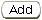

Previous Topic
Next Topic
| Facilities
|
Previous Topic |
Next Topic |
The system’s third-level menu, Attachments, of the Facility Profile page allows you to view a list of attachments, edit or delete an attachment, or add a new attachment to the facility’s profile. The Attachments list is not a list of ALL attachments in the system that were incorporated for various purposes, such as applications or compliance reporting. Rather this third-level menu is a place where Ohio EPA staff can incorporate attachments that are relevant to the facility. For example, results from modeling, process flow diagrams or other important documents.
The following datagrid of information will appear when you access the third-level menu, Attachments:
To add a new attachment, click  at the bottom of the
datagrid. A pop-up
will appear in which you must choose the Attachment Type
(Air Toxics
Modeling Results, Other, Process Flow Diagram), enter a Description
of
the attachment, and upload the file using the Browse
button. Click  to
add the attachment or
to
add the attachment or  to abort the process and
return to the Attachments
page without uploading an attachment.
to abort the process and
return to the Attachments
page without uploading an attachment.

To update or delete an existing attachment, click the Attachment
ID
hyperlink. A pop-up will appear in which you may change the Attachment
Type or Description
and then click  .
If you need to replace the
document uploaded you must delete it and enter the attachment again. If
you wish to delete an attachment, click
.
If you need to replace the
document uploaded you must delete it and enter the attachment again. If
you wish to delete an attachment, click  .
Click
.
Click  to abort the process
and return to the Attachments
page without editing or deleting an
attachment.
to abort the process
and return to the Attachments
page without editing or deleting an
attachment.
Information from the Emission Units
list may be viewed,
exported to
Excel or printed. By clicking  you may view and print. By
clicking
you may view and print. By
clicking  a
pop-up will appear in which you must click Open in
order to view the
information in Excel.
a
pop-up will appear in which you must click Open in
order to view the
information in Excel.
Copyright © 1996, 2004, Oracle. All rights reserved.